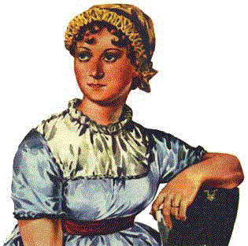

Jane Austen

One of the greatest of British fiction writers, she had a major impact on the development of the English novel. Her six novels, written during the romantic period, combine 18th- and 19th-century concerns and modes of fiction and together have a thematic unity and a consistent excellence that make them one of the supreme achievements of English literature.When attempts to interest publishers in her novels failed, Austen published Sense and Sensibility at her own expense in 1811. In Chawton she issued two of her early novels and wrote her three later ones, Mansfield Park (1814), Emma (1816), and Persuasion (published posthumously in 1818). A final novel, Sanditon, was still unfinished when she died on July 18, 1817, in Winchester (where she is buried in the cathedral). Although Austen never married and led a relatively restricted life, the world of the family, of village life, and of England's rural gentry withheld few secrets or subtleties from her observant and discriminating eye.
Austen's works are satirical comedies of the domestic and social life of a limited sphere of English society. Her plots constitute variations on the standard theme of female novelists of the late 18th century, definitively established by Fanny BURNEY: a young girl's entry into society climaxed eventually by marriage. Each of Austen's heroines follows this course, by the end of the novel acquiring a husband, often an older man who has been both father and guide to her as well as lover. Well aware of the limitations of her fiction, Austen likened herself to a painter of miniatures; yet within the confines of her seemingly predictable plots, and narrow focus, she carefully explores, in highly polished, witty, and meticulous style, an important and universal theme, the adjustments the self must make to family and society.
Austen's early novels look back to the 18th century. Northanger Abbey satirizes the Gothic novel and sentimental friendship, and Sense and Sensibility mocks the cult of sensibility in which personal feeling and spontaneity were valued to the exclusion of social responsibility and self-restraint. Pride and Prejudice, representing the flowering of her early style, is probably Austen's best-loved work; its vivacious and witty heroine, Elizabeth Bennet, is in the tradition of the articulate women of Restoration and 18th-century comedy. Austen's later works, Mansfield Park and Persuasion, have themes traditionally labeled Victorian; they describe the loneliness and repression of young women forced into silence and self-effacement by the social codes prescribing female behavior. Fanny Price and Anne Elliot, for example, must hide their love and wait for their moral strength to be discovered. Emma, the sunniest and most satisfying of Austen's novels, has something of the sprightliness of Pride and Prejudice but also displays the psychological probing found in the later novels. It is especially skillful in the use of dialogue to convey the mental shifts and starts of its characters.
In her own time, Austen was a retiring novelist whose name did not appear on her title pages. Yet although she was not widely known or acclaimed, she had a select band of admirers that included the novelist Sir Walter SCOTT and the Prince Regent. Her influence on later writers such as Henry JAMES was profound. Her stature as a fiction writer now seems unquestionable, and critics like F. R. LEAVIS have ranked her among the greatest British novelists. There is, however, considerable debate about the tone of her work. Some critics have stressed the irony of her vision, what D. W. Harding has called her "regulated hatred." They see Austen as responding subversively to a world she knows to be debased, undermining social values while she pays conventional homage to them. Others view her work as an intelligent affirmation of conservative social and religious values, in the same moral tradition as the novelists Samuel RICHARDSON and Henry FIELDING and the essayist Samuel JOHNSON. According to proponents of this view, her invariably happy endings are not acts of bad faith but necessary culminations of a mature fictional vision. In 1977 an untitled play attributed to Austen was discovered, making it her only surviving serious drama.
(c) 1992 Janet Todd